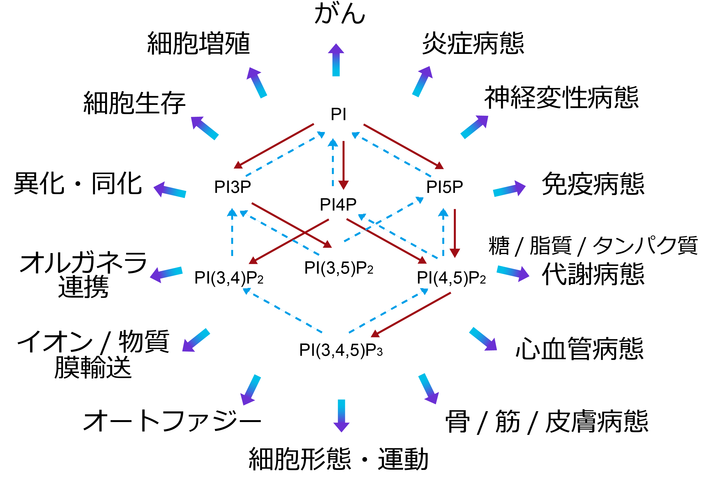

ホスファチジルイノシトール（PI）と、そのイノシトール環3・4・5位水酸基がリン酸化された7種のホスホイノシタイド。あわせて8種それぞれが固有の存在量・細胞内局在・結合タンパク質をもち、多彩な生命現象を制御する。

細胞膜リン脂質の1～10％を占める。一部がリン酸化されて以下のホスホイノシタイドが生成される。正常細胞・組織内での存在量は概ね「PI≫PI4P≧PI(4,5)P2＞PI3P＞PI(3,5)P2＞PI(3,4,5)P3≫PI(3,4)P2，PI5P」の序列で保たれている。
PIの＜1％のレベルで存在する。タンパク質分解系の制御に重要な役割を果たしている。ユビキチン化タンパク質の多胞体での選別に関わるESCRT複合体の形成において、Hrs（ESCRT-0）、EAP45（ESCRT-II）をリクルートする。オートファジーにおいては、WIPI2とDFCP1をオートファゴソームの形成開始部位にターゲットし、Alfyを介したユビキチン化タンパク質のオートファゴソームへの集積を促進する。また、SNX5やキネシン16Bなどとの結合により、細胞内小胞輸送の多くの局面に関与している。
PIの3～5％のレベルで存在する。ゴルジ体と形質膜における機能が注目されている。ゴルジ体にAP1をリクルートすることで積荷を含むクラスリン被覆小胞の形成を促進し、GOLPH3を介して膜形態、小胞の出芽を制御する。また、コンタクトサイトでの脂質輸送において重要な役割を果たしており、例えば、CERTによる小胞体からゴルジ体へのセラミド移行や、ORPによるホスファチジルセリンの小胞体から形質膜への輸送、小胞体からゴルジ体へのコレステロール輸送を制御する。特異性は高くないものの形質膜貫通タンパク質にも作用し、TRPV1陽イオンチャネルや機械感受性Piezo陽イオンチャネルなどの活性調節への関与も報告されている。
通常は痕跡量しか存在せず、生理機能についても不明な点が多い。核における機能が研究されており、ING2にplant homeo domain (PHD) fingerを介して結合し、p53の安定化によるDNA傷害応答に関与することや、SAP30およびSAP30Lの塩基性アミノ酸クラスターに結合することでヒストン脱アセチル化を制御することなどが報告されている。また、グルコース飢餓状態において、PI3P標的タンパク質を介してオートファジーを誘導することが報告されている。しかしながら、論文は少なく、未だ謎が多い脂質といえる。
通常は痕跡量しか存在しないが、増殖因子、走化性因子などの受容体刺激や過酸化水素処理により細胞内に産生される。がん組織ではPI(4,5)P2に匹敵するレベルで蓄積する場合もある。SNXファミリーのいくつかの分子と結合して、クラスリン被覆小胞やマクロピノソームの成熟と縊り取りを促進する。細胞形態、運動に関してはlamellipodin (Lpd)を形質膜にリクルートし、Ena/VASPを介したアクチン繊維の伸長やWAVEを介したアクチン繊維の分枝によって、ラッフリング、ラメリポディアの形成を促す。ファゴソーム膜でのp40phoxとの結合はNADPHオキシダーゼのアセンブリーによる活性酸素産生に必須である。αTTPとPI(3,4)P2の結合はビタミンEの放出を促進し、形質膜でのABCトランスポーターへの受け渡しに関与する。また、核においては、酸化ストレスに伴うDNA損傷に関与する。
PIの＜0.5％のレベルで存在する。主にエンドソーム、リソソームでの機能が着目されており、PI(3,5)P2の枯渇により細胞内に光学顕微鏡でも観察可能な空胞が形成される。イオンチャネルへの作用としては、TRPML1の活性化によりリソソームからのCa2+放出を促進し、two-pore channel（TPC）1/2を活性化してリソソームやメラノソームからのNa+放出を促進する。ESCRT-III複合体のVps24と結合し、多胞体経路でのタンパク質分解に関与する。
PIの3～5％のレベルで存在する。PLCの基質となり、ジアシルグリセロール、イノシトール(1,4,5)三リン酸が産生される。プロフィリンやαアクチニンなどのアクチン重合調節タンパク質へのPI(4,5)P2の結合と調節機能の解明は、イノシトールリン脂質の直接作用が広く研究されるきっかけになった。アクチン繊維と形質膜を架橋するezrin/radixin/moesin（ERM）タンパク質やtalin、vinculinなどを介して細胞接着斑の形成を担う。また、イオンチャネルやトランスポーターなど、PI(4,5)P2により調節される膜輸送体は枚挙にいとまがない。クラスリン被覆ピット形成におけるAP-2を介したクラスリンの集積や、epsin 1を介した膜の変形など、形質膜での機能が先行して研究されてきたが、エンドソーム系においても膜タンパク質のリサイクリングやオートファジーへの関与が示唆されている。cPLA2やPLDを活性化することから、リゾリン脂質やホスファチジン酸の生成を介して他のリン脂質代謝にも関与すると考えられている。
PIの＜0.1％のレベルで存在するが、がん組織ではその100倍程度まで上昇する例もある。分解酵素の活性が高いこと、インスリンなど様々な細胞外アゴニストの受容体刺激依存的にクラスI phosphoinositide 3-kinase（PI3K）が活性化されることから、セカンドメッセンジャーとして機能する。主に形質膜での機能が理解されている。結合タンパク質の属性は広範で、PKBやBtkなどのプロテインキナーゼ、TRPM3などのイオンチャネル、低分子量Gタンパク質RacやArf6のGEFや RhoのGAP、myosin-Xや種々のアクチン結合タンパク質、WAVE2などの細胞骨格関連タンパク質などが挙げられる。細胞増殖、分化、運動、細胞死、糖・脂質代謝調節などを司る。